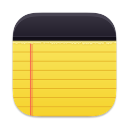
New Bramble NotesYour notes, everywhere you write.
Checklists, tables, drawings, photos and PDFs, on your computer, phone and tablet. Bring your Apple Notes along, keep them in sync through storage you own, and never get locked in.
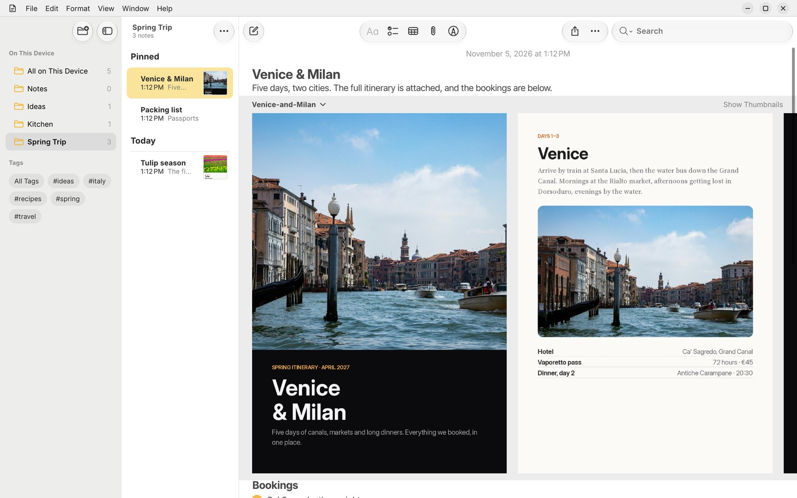
Pick up right where you left off.
Start a note on your laptop, add to it on your phone on the train, and finish it on your tablet. Bramble Notes syncs through any WebDAV storage you already have, so your notes never sit on someone else's servers.
- Your storage: Nextcloud, Koofr, a NAS or any WebDAV folder.
- Edits merge when two devices change the same note.
- Quick and resumable: big libraries sync in the background and carry on where they stopped.
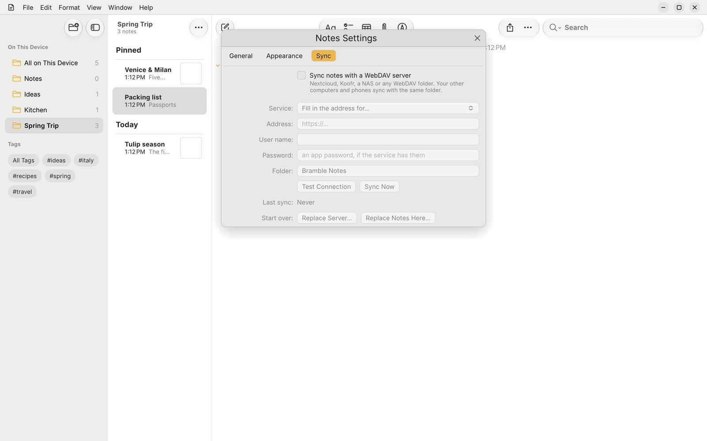
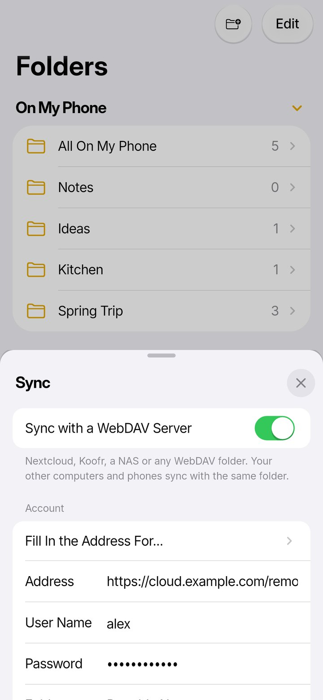
Bring your Apple Notes library.
Point Bramble Notes at the Notes library from a Mac and everything comes across: folders, pinned notes, tags, checklists, tables, drawings, scans and attachments, with their dates. UpNote libraries import too.
- The real thing: it reads Apple's own NoteStore database, not an export.
- Locked notes open with their password.
- Duplicates between libraries are found for you.
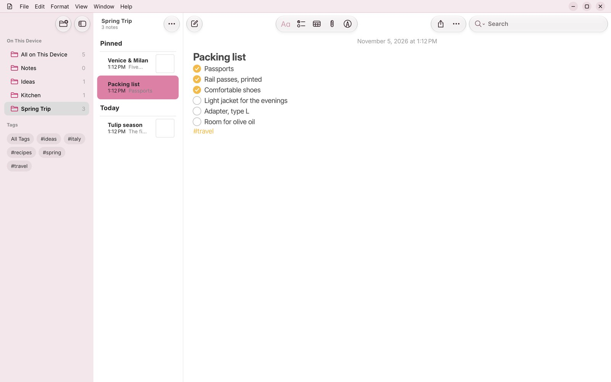
PDFs you can flip through.
Drop in a brochure, a ticket or a menu and it sits right in the note, page beside page. Swipe through it, open it full screen, or show it small. Photos, scans, audio recordings and files live alongside your words.
- Multi-page PDFs as a carousel, with page thumbnails.
- Photos and scans inline, at the size you choose.
- Record audio straight into a note.
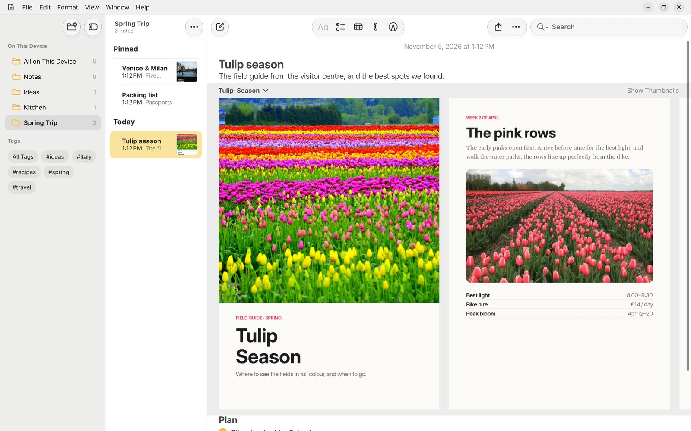
Beautiful on a bigger screen.
On a tablet or an unfolded phone, Bramble Notes spreads out into folders, notes and the note itself side by side, and tidies its toolbar into a compact menu when space is tight.
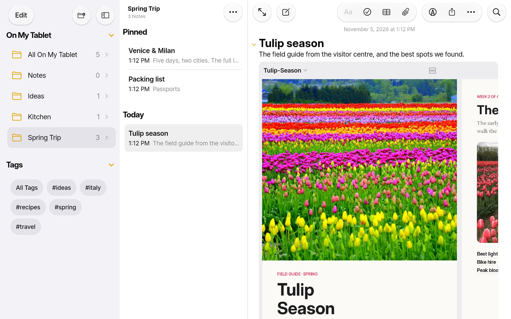
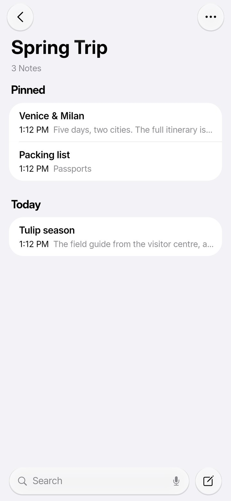
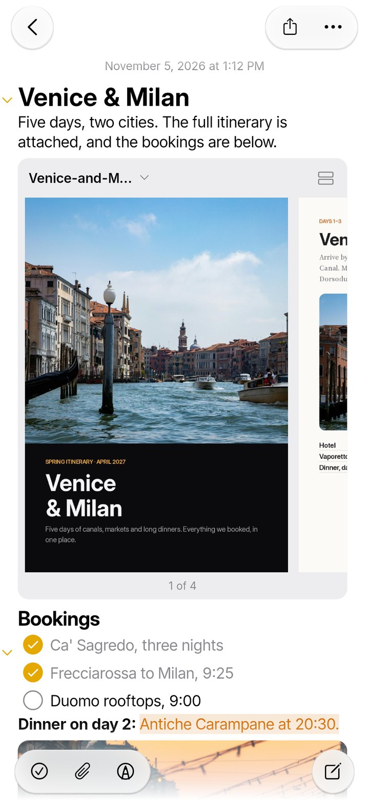
Your colours, your toolbar.
Choose from thirteen colour themes, light or dark, with Liquid Glass buttons that float over your notes. Drag the tools you use most into the toolbar, and hide the menu bar if you like it clean.
- 13 themes, from Ocean and Forest to Rose and Midnight.
- Liquid Glass toolbars with a soft blur behind them.
- Customize the toolbar by dragging, just like on a Mac.
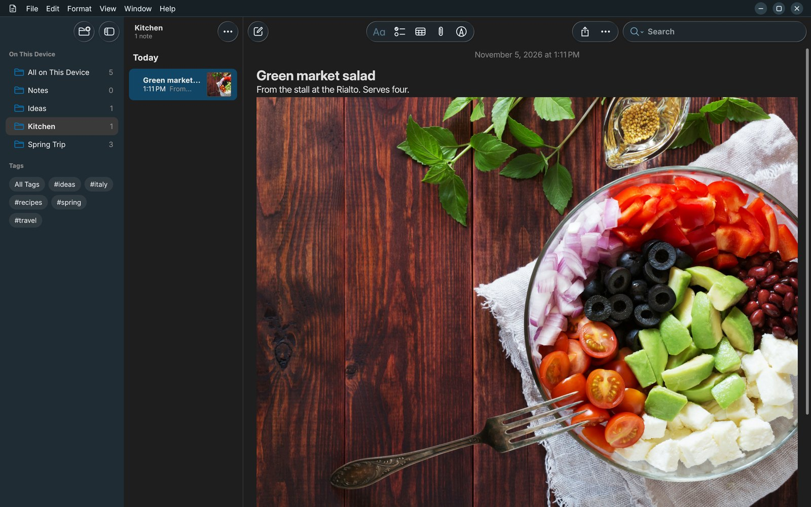
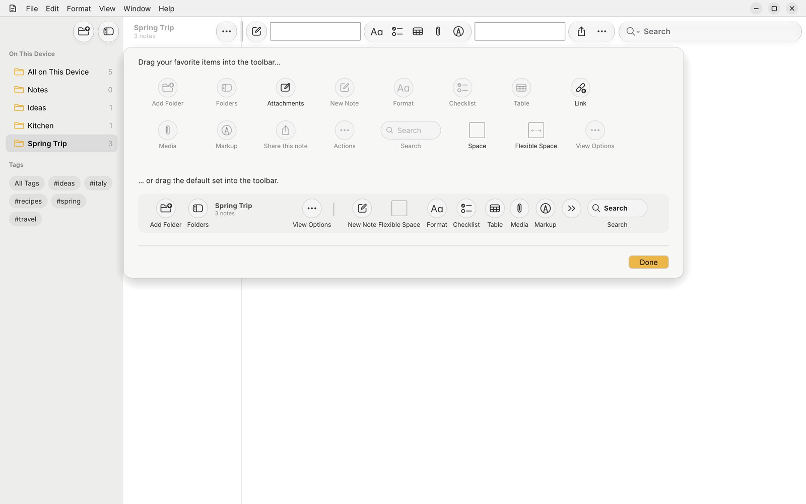
Your notes are yours to take.
Export one note, a selection or a whole folder whenever you like. Collapsed sections, orientation and extra details are all up to you.
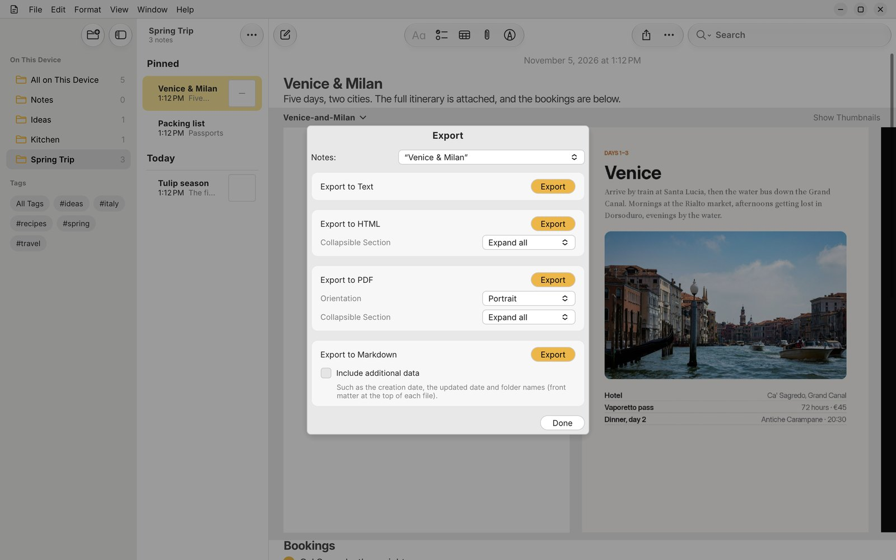
.mdMarkdown, with dates and folders as front matter if you want them..pdfPortrait or landscape, ready to print or send..htmlWeb pages, with collapsible sections kept..txtPlain text for anything else..bnotesYour whole library in one file, nothing lost: for backups and moving.Stored as plain files
Bramble Notes keeps each note as its own file, with attachments stored once, so syncing copies only what changed and nothing is hidden in a database you can't read. A small index makes search instant, and rebuilds itself if it's ever missing.
Bramble Notes/
library.json folders, Smart Folders, tags
notes/
4F2A….json one file per note
files/
9c1e…. attachments, stored once
index/ search cache (rebuilt anytime)
Get Bramble Notes.
Free and open source. Bramble Notes is new: it's in active development, so tell us what you find.
Linux
From the Snap Store (Ubuntu's App Center), or as an AppImage that runs anywhere.
sudo snap install bramble-notes
macOS
Apple silicon and Intel Macs. Open the zip and drag Bramble Notes to Applications.
Android
Phones, tablets and foldables, Android 8 and newer. Install the APK from your phone's browser.
GPL-3.0 · report problems, suggest features or send a pull request